Справочник по Angular и React · модуль 2 · данные с сервера и ИИ-диспетчер
2.5
Обновление по событиям
В этой главе доска начинает получать изменения от PocketBase без обновления страницы. Опыт с двумя окнами показывает, что сейчас одно окно не знает о заявке, добавленной в другом. Затем в проект ставится библиотека pocketbase, и хук useRequests подписывается на события коллекции: создание, изменение и удаление записей. Подписка без проверки даёт повтор карточки, его убирает функция upsertRequest. В конце канал событий разобран во вкладке Network.
- Категория
- React, работа с сервером
- Уровень
- Начальный
- Что понадобится
- Проект
zayavkiпосле главы 2.4, запущенный PocketBase с коллекциейrequests, два окна браузера - Результат
- Заявки, статусы и правки из панели PocketBase появляются во всех открытых окнах доски сразу
Если проекта нет или он в другом состоянии
Архив содержит проект zayavki в том состоянии, с которого начинается глава, — после главы 2.4. PocketBase должен работать в Docker с коллекцией и правилами из главы 2.2.
Архив закрыт паролем. После нажатия на кнопку введите пароль — его сообщает преподаватель.
- Распакуйте архив в папку
react-kurs. Если папкаzayavkiтам уже есть, сначала переименуйте старую. - Проверьте, что PocketBase запущен: в Docker Desktop контейнер
avtomatizaciya-pocketbase-1работает. - Выполните три команды в терминале VS Code.
cd zayavki npm install npm run dev
§1Окно без чужих изменений
ДелаемОпыт: два окна доски
- Откройте второе окно
Откройте доску
http://localhost:5173/. Нажмите Ctrl+N (на Mac ⌘+N) и откройте тот же адрес в новом окне. Поставьте окна рядом: так один компьютер изображает студента и мастера ИТ-отдела. - Добавьте заявку в окне 1
В первом окне добавьте заявку «Не работает интерактивная доска», кабинет 214, категория «Компьютер». В первом окне она появилась сверху, во втором её нет.
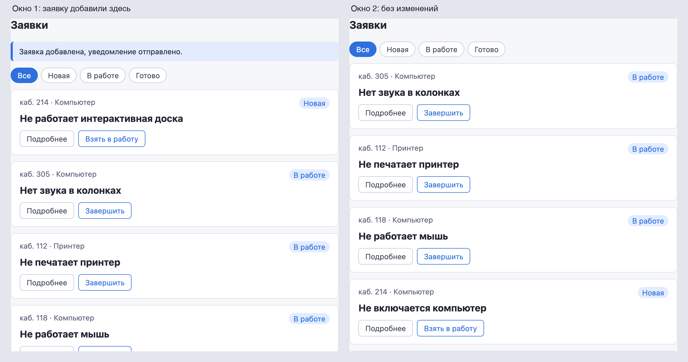
Окно 2 не показывает новую заявку - Обновите окно 2
Во втором окне нажмите F5. Заявка появилась: в базе она была, второе окно загрузило список до её добавления.
РазбираемсяОпрос и события
Доска запрашивает список один раз — когда открывается страница. Дальше она ничего не спрашивает у сервера, и сервер сам ей ничего не сообщает. Изменения из другого окна, с другого компьютера или из панели PocketBase видны только после F5.
Посылку можно ждать двумя способами. Можно звонить на почту каждые десять минут и спрашивать, пришла ли она. Почти все звонки впустую, а если посылка пришла сразу после звонка, о ней узнаешь только через десять минут. А можно оставить номер телефона — почта сама пришлёт СМС в ту минуту, когда посылка придёт.
СМС дождётся владельца, даже если телефон был выключен. События PocketBase получает только открытая страница. Поэтому при открытии доска, как и раньше, загружает весь список.
Первый способ называется опрос (polling): браузер раз в несколько секунд заново запрашивает список. Второй — события в реальном времени (realtime): браузер один раз подписывается, и сервер сам присылает сообщение о каждом изменении. В PocketBase события идут по технологии SSE (Server-Sent Events — «события, отправленные сервером»). Браузер открывает одно долгое соединение, а сервер дописывает в него сообщение при каждом изменении в коллекции.
На схеме — оба способа за одну минуту, в которую одна заявка появилась на 35-й секунде.
Опрос раз в 10 секунд и подписка на события за одну минуту
Голубое — запросы и соединение без новостей, зелёное — момент, когда доска узнала о заявке. Пунктир — заявка появилась в базе.
Опрос проще устроить, но он тратит запросы и запаздывает. PocketBase присылает события, поэтому доска подпишется на них.
Подписываться удобнее через библиотеку от авторов PocketBase: она открывает соединение и разбирает сообщения.
§2Библиотека pocketbase и подписка
ДелаемСтавим библиотеку и пишем подписку
- Установите библиотеку
Откройте второй терминал (Terminal → New Terminal): в первом работает
npm run dev. Выполните команды. Версия указана после@, чтобы у всех была одна и та же.Терминал · папка react-kurs cd zayavki npm install pocketbase@0.28.1
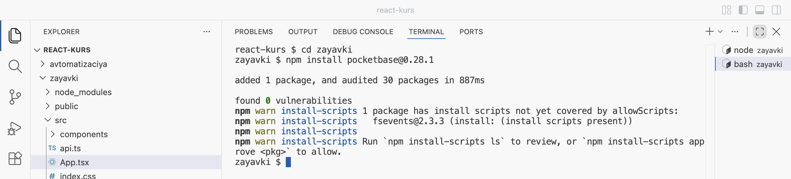
Библиотека установлена: added 1 package Строки
npm warn install-scriptsна macOS — предупреждение, не ошибка. Оно относится к пакетуfsevents, через который Vite следит за файлами, и на работу доски не влияет. Команда записала библиотеку вpackage.jsonв разделdependencies, а её файлы — вnode_modules. - Создайте файл подписки
В папке
srcсоздайте файлrealtime.tsи вставьте код.zayavki/src/realtime.ts import PocketBase from 'pocketbase' import type { RequestItem } from './requests' const pb = new PocketBase('http://localhost:8090') export type RequestEvent = { action: string record: RequestItem } export function subscribeRequests(onEvent: (event: RequestEvent) => void): () => void { const pending = pb.collection('requests').subscribe<RequestItem>('*', onEvent) return () => { pending.then((unsubscribe) => unsubscribe()) } }
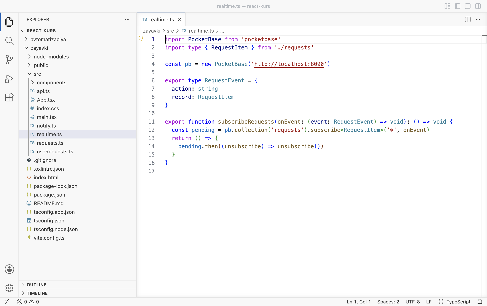
Новый файл src/realtime.ts
РазбираемсяЧто записано в realtime.ts
import PocketBase from 'pocketbase' 1 import type { RequestItem } from './requests' const pb = new PocketBase('http://localhost:8090') 2 export type RequestEvent = { 3 action: string record: RequestItem } export function subscribeRequests(onEvent: (event: RequestEvent) => void): () => void { 4 const pending = pb.collection('requests').subscribe<RequestItem>('*', onEvent) 5 return () => { 6 pending.then((unsubscribe) => unsubscribe()) } }
- 1
Импорт из установленной библиотеки. Путь без точки и косой черты (
'pocketbase', а не'./pocketbase') означает «пакет изnode_modules», как'react'. - 2
new PocketBase(адрес)создаёт клиент — объект, через который код обращается к серверу PocketBase. Клиент один на всё приложение, поэтому он создан вне функции. - 3
Тип события:
action— что случилось ('create','update'или'delete'),record— запись после изменения. - 4
subscribeRequestsпринимает функциюonEvent, которую нужно вызывать на каждое событие, и возвращает функцию отписки() => void. Такая же пара была у Esc в главе 2.1:addEventListenerиremoveEventListener. - 5
subscribe('*', onEvent)— подписаться на все записи коллекцииrequests: звёздочка значит «любая запись». Подписка устанавливается не сразу: библиотека открывает соединение и сообщает серверу, на что подписаться. Поэтомуsubscribeвозвращает обещание, а функцию отписки оно отдаст, когда подписка готова. Обещание сохранено вpending. - 6
Функция отписки: дождаться, когда подписка готова (
pending.then), и снять её. Так отписка сработает, даже если её вызвали раньше, чем подписка установилась, — в режиме разработки это случается сразу после первого запуска эффекта.
Функция подписки готова. Подписка должна жить, пока доска на экране, — значит, её место в эффекте хука useRequests.
§3Подписка в хуке
ДелаемЭффект подписки и опыт с двумя окнами
- Замените useRequests.ts
Добавлены импорт
subscribeRequestsи второй эффект: на каждое событие он меняет список. Изменённые строки подсвечены.zayavki/src/useRequests.ts import { useEffect, useState } from 'react' import { createRequest, deleteRequest, fetchRequests, updateStatus } from './api' import { nextStatus, type NewRequest, type RequestItem, type Status } from './requests' import { subscribeRequests } from './realtime' export function useRequests() { const [requests, setRequests] = useState<RequestItem[]>([]) const [loading, setLoading] = useState(true) const [error, setError] = useState('') const [attempt, setAttempt] = useState(0) useEffect(() => { let ignore = false async function load() { try { const list = await fetchRequests() if (!ignore) { setRequests(list) } } catch (e) { if (!ignore) { setError((e as Error).message) } } if (!ignore) { setLoading(false) } } load() return () => { ignore = true } }, [attempt]) useEffect(() => { return subscribeRequests(({ action, record }) => { if (action === 'create') { setRequests((list) => [record, ...list]) } else if (action === 'update') { setRequests((list) => list.map((r) => (r.id === record.id ? record : r))) } else if (action === 'delete') { setRequests((list) => list.filter((r) => r.id !== record.id)) } }) }, []) function retry() { setError('') setLoading(true) setAttempt(attempt + 1) } async function add(data: NewRequest): Promise<RequestItem> { const created = await createRequest(data) setRequests((list) => [created, ...list]) return created } async function next(id: string, status: Status) { const updated = await updateStatus(id, nextStatus(status)) setRequests((list) => list.map((r) => (r.id === id ? updated : r))) } async function remove(id: string) { await deleteRequest(id) setRequests((list) => list.filter((r) => r.id !== id)) } return { requests, loading, error, retry, add, next, remove } }
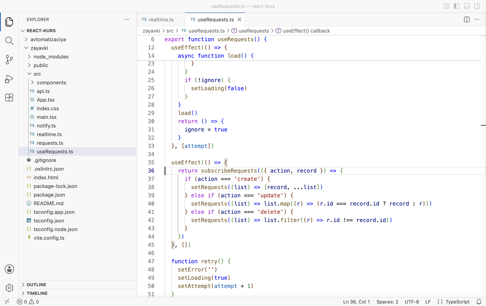
Эффект подписки, строки 35–45 - Добавьте заявку в окне 1
Обновите оба окна (F5). В первом окне откройте DevTools на вкладке Console и добавьте заявку «Не открывается журнал», кабинет 305, категория «Интернет». Во втором окне она появилась сама, без F5. А в первом — дважды, и в консоли красные ошибки.
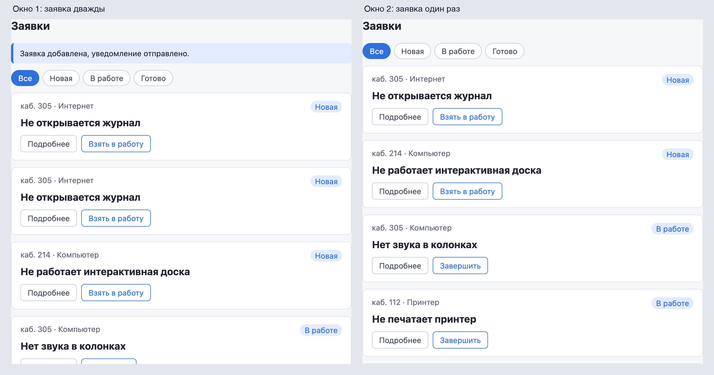
Окно 2 получило заявку само, в окне 1 она дважды 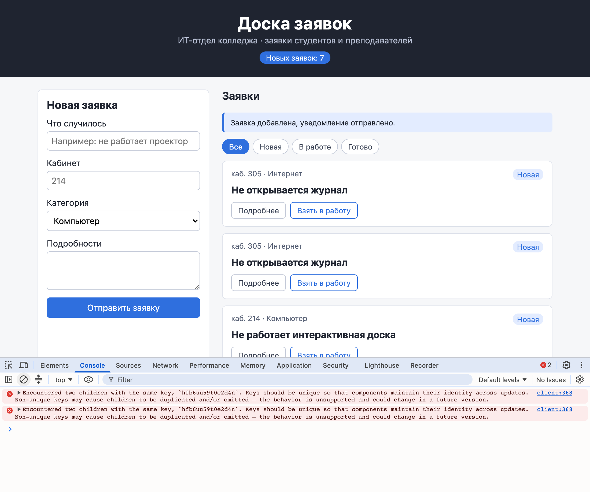
В консоли: Encountered two children with the same key
РазбираемсяОткуда вторая карточка
Эффект подписки устроен как подписка на Esc в главе 2.1: пустой массив зависимостей — подписаться один раз, функция очистки — отписаться.
subscribeRequests уже возвращает функцию отписки, поэтому эффект отдаёт её React словом return. На каждое событие эффект меняет список функцией обновления из главы 2.3: create кладёт запись в начало, update заменяет, delete убирает.
Сервер присылает событие всем подписчикам — и окну, где заявку добавили. В первом окне заявка попала в список дважды: из ответа на запрос POST (функция add) и из события create. У обеих карточек один id, а ключи в списке должны быть разными (глава 1.5). Об этом ошибка в консоли: «Encountered two children with the same key» — «встретились два элемента с одинаковым ключом».
useEffect(() => { return subscribeRequests(({ action, record }) => { if (action === 'create') { setRequests((list) => [record, ...list]) } else if (action === 'update') { setRequests((list) => list.map((r) => (r.id === record.id ? record : r))) } else if (action === 'delete') { setRequests((list) => list.filter((r) => r.id !== record.id)) } }) }, [])
- Запрос POST
Окно 1 отправило заявку. PocketBase сохранил её, присвоил
idи сделал две вещи: ответил окну 1 и разослал событиеcreateвсем подписчикам. - Событие в окне 2
Окно 2 получило
createи положило запись в начало списка. Заявка одна.окно 2журнал ×1 - Событие в окне 1
Окно 1 тоже подписано и тоже получило
create. Запись легла в начало списка.окно 1журнал ×1 - Ответ на POST в окне 1
Функция
addиз хука получила созданную запись и тоже положила её в начало. Теперь у окна 1 две карточки с однимid. Ответ и событие могут прийти и в другом порядке — карточек всё равно две.окно 1журнал ×2
Запись должна попадать в список один раз, откуда бы она ни пришла. Для этого нужна проверка: если запись с таким id уже есть — заменить её, если нет — добавить.
§4Без повторов: upsertRequest
ДелаемОдна функция для ответов и событий
- Дополните requests.ts
Замените содержимое
src/requests.ts. В конец добавлена функцияupsertRequest.zayavki/src/requests.ts export type Status = 'Новая' | 'В работе' | 'Готово' export type Category = 'Компьютер' | 'Проектор' | 'Принтер' | 'Интернет' export type RequestItem = { id: string title: string room: string category: Category details: string status: Status } export type NewRequest = { title: string room: string category: Category details: string } export function nextStatus(status: Status): Status { if (status === 'Новая') { return 'В работе' } return 'Готово' } export function upsertRequest(list: RequestItem[], item: RequestItem): RequestItem[] { if (list.some((r) => r.id === item.id)) { return list.map((r) => (r.id === item.id ? item : r)) } return [item, ...list] }
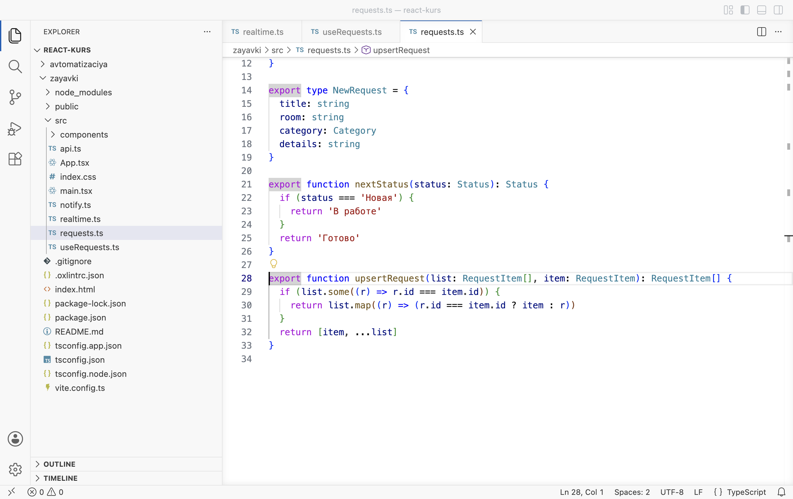
Функция upsertRequest в requests.ts - Замените useRequests.ts
Эффект подписки стал короче, а
addиnextтоже пользуютсяupsertRequest.zayavki/src/useRequests.ts import { useEffect, useState } from 'react' import { createRequest, deleteRequest, fetchRequests, updateStatus } from './api' import { nextStatus, upsertRequest, type NewRequest, type RequestItem, type Status } from './requests' import { subscribeRequests } from './realtime' export function useRequests() { const [requests, setRequests] = useState<RequestItem[]>([]) const [loading, setLoading] = useState(true) const [error, setError] = useState('') const [attempt, setAttempt] = useState(0) useEffect(() => { let ignore = false async function load() { try { const list = await fetchRequests() if (!ignore) { setRequests(list) } } catch (e) { if (!ignore) { setError((e as Error).message) } } if (!ignore) { setLoading(false) } } load() return () => { ignore = true } }, [attempt]) useEffect(() => { return subscribeRequests(({ action, record }) => { if (action === 'delete') { setRequests((list) => list.filter((r) => r.id !== record.id)) } else { setRequests((list) => upsertRequest(list, record)) } }) }, []) function retry() { setError('') setLoading(true) setAttempt(attempt + 1) } async function add(data: NewRequest): Promise<RequestItem> { const created = await createRequest(data) setRequests((list) => upsertRequest(list, created)) return created } async function next(id: string, status: Status) { const updated = await updateStatus(id, nextStatus(status)) setRequests((list) => upsertRequest(list, updated)) } async function remove(id: string) { await deleteRequest(id) setRequests((list) => list.filter((r) => r.id !== id)) } return { requests, loading, error, retry, add, next, remove } }
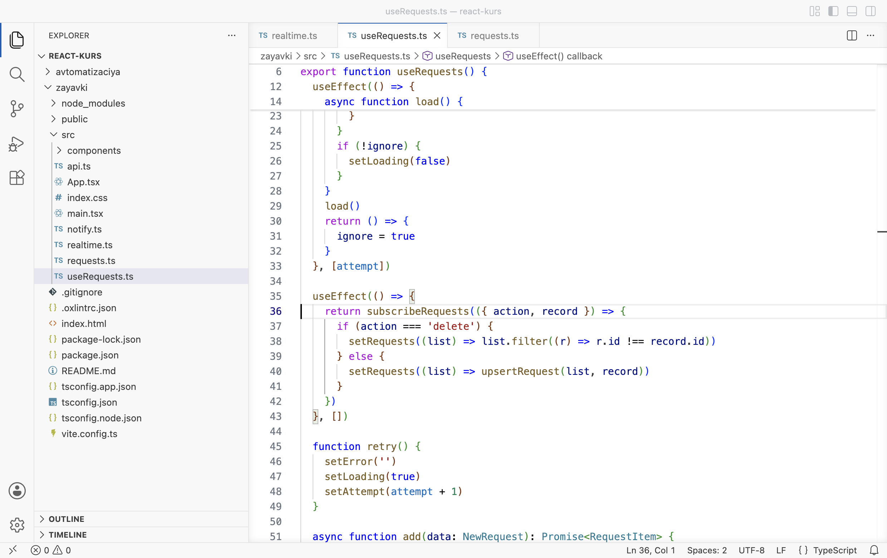
Эффект подписки с upsertRequest - Добавьте заявку в окне 1
Обновите оба окна. В первом добавьте «Не работает сканер», кабинет 112, «Принтер». Теперь заявка по одному разу в каждом окне.
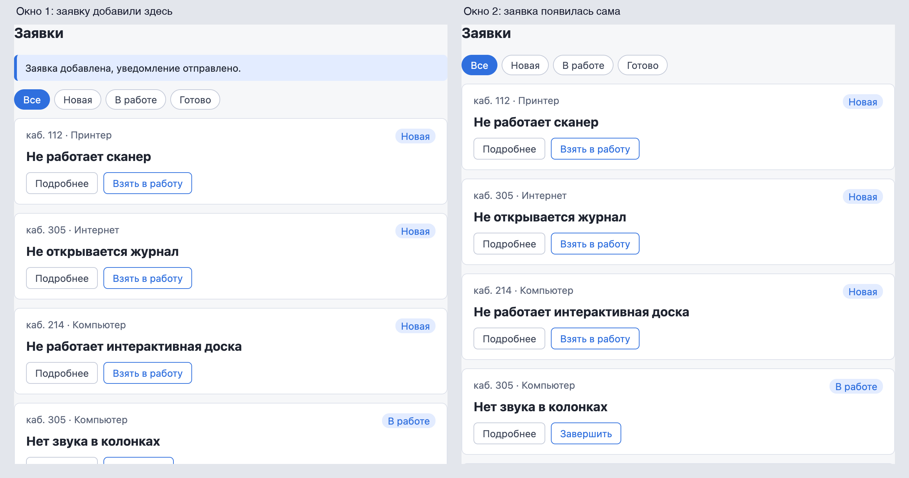
Заявка в обоих окнах, по одному разу - Смените статус в окне 2
Во втором окне у заявки «Не работает сканер» нажмите Взять в работу. В первом окне статус сменился сам.
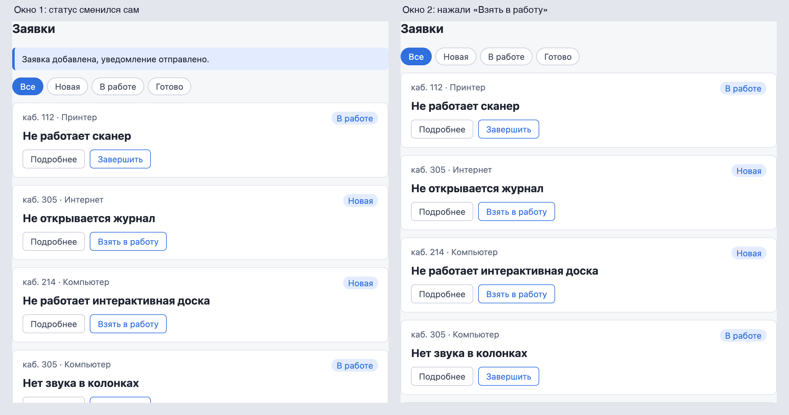
Статус из окна 2 дошёл до окна 1 - Измените заявку в панели PocketBase
Откройте панель
http://localhost:8090/_/, коллекциюrequests, и щёлкните по заявке «Не работает мышь». В поле category выберите «Интернет» и нажмите Save changes.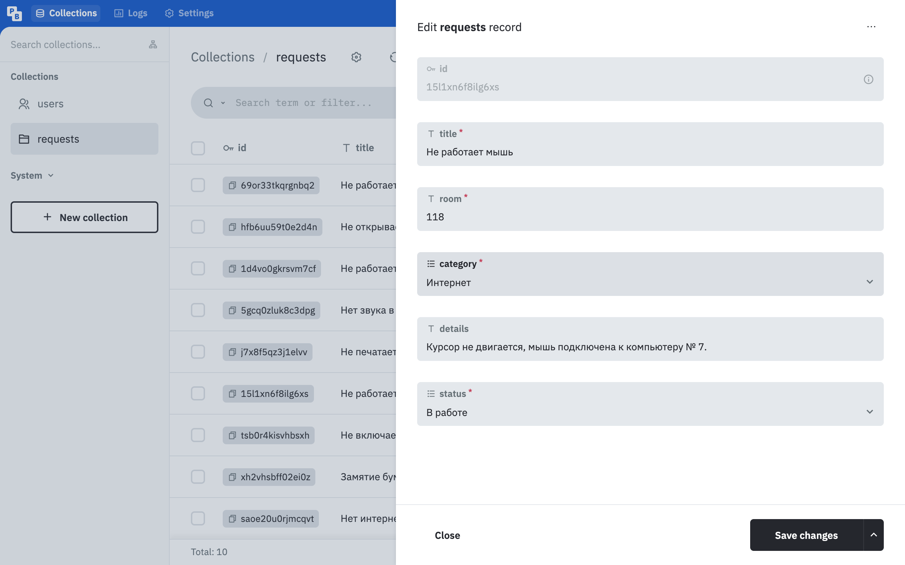
Категория меняется в панели администратора - Посмотрите на доску
Вернитесь к окну доски. У «Не работает мышь» категория «Интернет» — без F5.
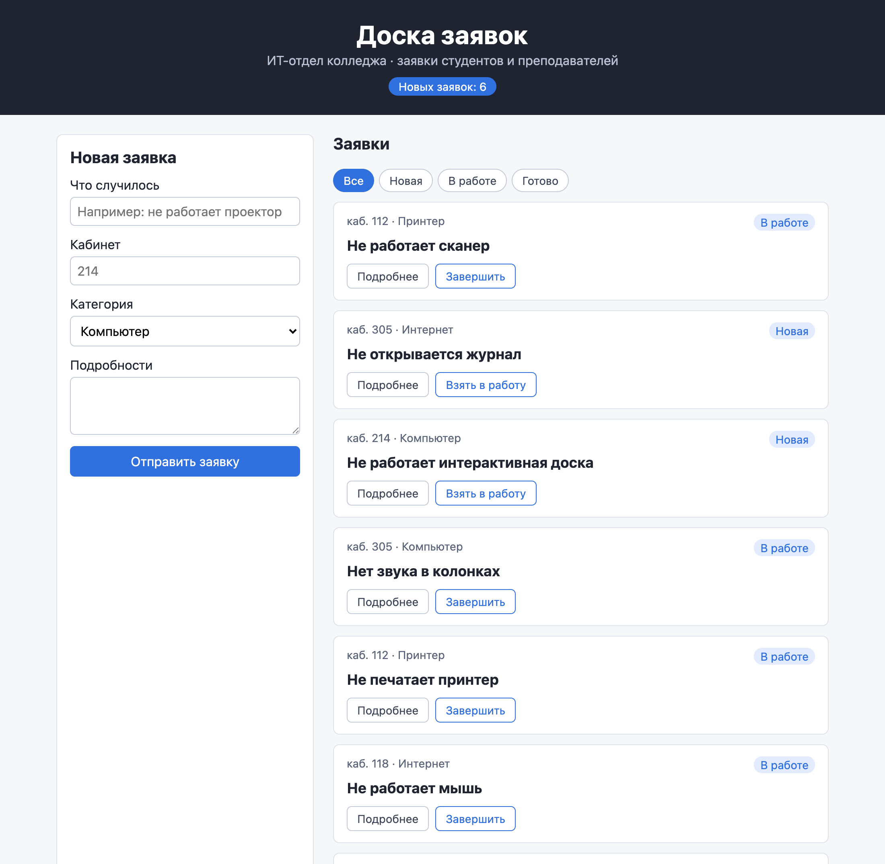
Правка из панели дошла до доски: каб. 118 · Интернет
РазбираемсяКак работает upsertRequest
Слово upsert составлено из update и insert: «обновить, если есть, иначе вставить». Так называют эту операцию в базах данных.
export function upsertRequest(list: RequestItem[], item: RequestItem): RequestItem[] { if (list.some((r) => r.id === item.id)) { 1 return list.map((r) => (r.id === item.id ? item : r)) 2 } return [item, ...list] 3 }
- 1
list.some(условие)— «есть ли в списке хотя бы один элемент, для которого условие верно». Здесь: есть ли заявка с таким жеid. Ответ —trueилиfalse. - 2
Есть — вернуть новый список, где эта заявка заменена новой версией. Остальные заявки на месте.
- 3
Нет — вернуть новый список с заявкой в начале.
Функция чистая: она не меняет переданный список и ничего не отправляет, только возвращает новый массив. Поэтому повторный вызов с той же записью даёт тот же результат. Для окна 1 это значит: ответ на POST и событие create приходят в любом порядке, а карточка остаётся одна. Второй вызов заменяет запись ей же.
| Что пришло | Откуда | Что делает список |
|---|---|---|
Событие create | Заявку добавили в любом окне | upsertRequest: добавить, если её ещё нет |
Событие update | Сменили статус на доске, правка в панели | upsertRequest: заменить |
Событие delete | Кнопка «Убрать с доски», удаление в панели | Убрать запись с этим id |
Ответ на add или next | Своё окно | upsertRequest: то же, что событие |
Правка из панели пришла на доску тем же событием update. Подписке всё равно, кто изменил запись: доска, другой браузер, панель или программа. Этим воспользуется автоматизация модуля: категорию заявки будет менять n8n, а доска покажет её сразу.
События идут по соединению, которое видно в DevTools. Там же видны сообщения сервера.
§5Канал событий в DevTools
ДелаемСмотрим поток событий
- Откройте вкладку Network
В первом окне откройте DevTools, вкладку Network, фильтр All, и обновите страницу.
- Вызовите событие
Во втором окне у любой новой заявки нажмите Взять в работу.
- Откройте поток
В списке запросов первого окна щёлкните по первой строке
realtime. Справа откройте вкладку EventStream.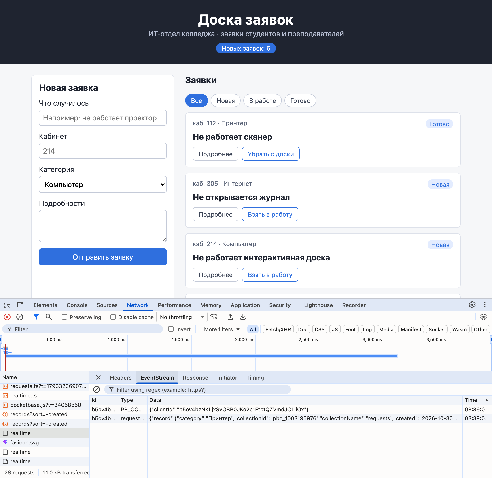
Поток событий: PB_CONNECT и событие коллекции requests
РазбираемсяЧто присылает сервер
Первая строка realtime — то самое долгое соединение GET /api/realtime. Полоса на шкале времени тянется через всю вкладку: соединение не закрывается. Во вкладке EventStream — сообщения, которые сервер дописал в него:
- PB_CONNECT — первое сообщение после подключения. В нём
clientId— номер этого окна на сервере; - requests… — событие коллекции. В поле Data — JSON:
recordс полями заявки иaction— что произошло.
Вторая строка realtime — запрос POST: с ним библиотека сообщила серверу, на что подписан этот clientId. Если в режиме разработки строк больше, это StrictMode: эффект подписки запускается, очищается и запускается снова, и каждая подписка или отписка — отдельный запрос.
Событие получают только те окна, которым правила коллекции разрешают видеть запись. В главе 2.2 правила List/Search и View открыты всем, поэтому события приходят всем окнам доски.
Проект после главы
Архив содержит проект zayavki в состоянии конца главы: библиотека pocketbase в package.json, realtime.ts с подпиской, upsertRequest в requests.ts, эффект подписки в useRequests.ts. Распаковка и запуск — как у архива в начале главы: npm install поставит и библиотеку.
Архив закрыт паролем. После нажатия на кнопку введите пароль — его сообщает преподаватель.
Теория модуля 2 закончена: доска хранит заявки в PocketBase, загружает их с состояниями загрузки и ошибки, держит код данных в хуке и получает изменения сразу. Дальше — проект и автоматизация модуля.
§6Частые ошибки
Сообщения получены в проекте zayavki: ошибки типов — командой npx tsc -b, остальные — в браузере.
| Что видно | Почему | Что сделать |
|---|---|---|
Своя новая заявка показана дважды, в консоли Encountered two children with the same key | Запись приходит и ответом на POST, и событием create, и оба раза добавляется в список | Добавлять через upsertRequest, как в §4 |
error TS2307: Cannot find module 'pocketbase' or its corresponding type declarations. | Библиотека не установлена | В папке zayavki выполнить npm install pocketbase@0.28.1 |
| Второе окно не обновляется само | Окно открыто до изменения кода и работает со старым кодом, или в хуке нет эффекта подписки | Обновить оба окна; сверить useRequests.ts с §4 |
В Network нет строки realtime | Эффект подписки не запустился: не сохранён файл или ошибка в коде | Сохранить файлы, проверить консоль и npx tsc -b |
| Окно было закрыто и пропустило изменения | События получает только открытая страница | Ничего: при открытии доска загружает весь список заново |
§7Проверьте себя
Чем подписка на события отличается от опроса?
При опросе браузер сам раз в несколько секунд запрашивает список, большинство запросов впустую, изменения видны с задержкой. При подписке браузер открывает одно соединение, и сервер присылает сообщение в момент изменения.
Почему subscribe возвращает обещание, а не сразу функцию отписки?
Подписка устанавливается не мгновенно: нужно открыть соединение и сообщить серверу тему. Функция отписки появится, когда подписка готова.
Зачем эффекту подписки функция очистки?
Чтобы снять подписку, когда компонент исчезает или эффект перезапускается. Без неё в режиме разработки было бы две подписки, и каждое событие обрабатывалось бы дважды.
Почему без upsertRequest заявка дублируется только в окне, где её добавили?
Только это окно получает запись двумя путями: ответом на POST и событием create. Остальные окна получают одно событие.
Что вернёт upsertRequest(list, item), если вызвать её два раза подряд с одной и той же заявкой?
Тот же список, что после первого вызова. Первый вызов добавит заявку, второй найдёт её по id и заменит той же самой.
Удалите в панели PocketBase готовую заявку. Какое событие придёт на доску и что сделает эффект?
Событие delete. Эффект оставит в списке все заявки, кроме той, у которой id совпал с удалённой, и карточка исчезнет во всех открытых окнах.
Шпаргалка
npm install pocketbase@0.28.1new PocketBase('http://localhost:8090')pb.collection('requests').subscribe('*', обработчик){ action: 'create' | 'update' | 'delete', record }pending.then((unsubscribe) => unsubscribe())useEffect(() => subscribeRequests(…), [])upsertRequest(list, record)realtime → EventStreamИтог главы
Доске больше не нужна F5: хук useRequests подписан на события коллекции requests. Подписку даёт библиотека pocketbase. Клиент открывает одно долгое соединение /api/realtime по технологии SSE. Сервер присылает в него событие на каждое создание, изменение и удаление записи, откуда бы оно ни пришло. Подписка живёт в эффекте с пустым массивом зависимостей, функция очистки снимает её. Одна и та же запись может прийти в окно дважды: ответом на свой запрос и событием. Поэтому список меняется функцией upsertRequest: заменить, если запись есть, добавить, если нет.
Источники
- pocketbase.io — API Realtime
- github.com — PocketBase JavaScript SDK
- MDN — Server-sent events
- react.dev — Synchronizing with Effects: Subscribing to events
- MDN — Array.prototype.some()